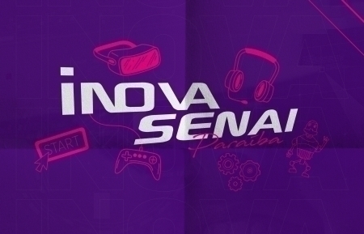

Onde estamos no espaço ?
A relação tempo e espaço nos revelará através dos periodos historicos e a organização
espacial uma sucessão de sistemas espaciais no qual o valor relativo de cada
lugar está sempre mudando no decorrer da história.

Saga SENAI de inovação...

SENAI - Vitória da Conquista
A unidade iniciou suas atividades em 2014. No entanto, o SENAI BAHIA tem
qualidade reconhecida pelo mercado desde 1949 produzindo conhecimento,
inovação, aprendizado e contribuindo para o desenvolvimento de competências e
habilidades necessárias ao profissional do futuro. Essa unidade atua nos municípios
da região sudoeste do estado da Bahia com equipe especializada e infraestrutura
laboratorial adequada para você e para sua empresa.

Todos os direitos reservados © 2024 Yuri Barros